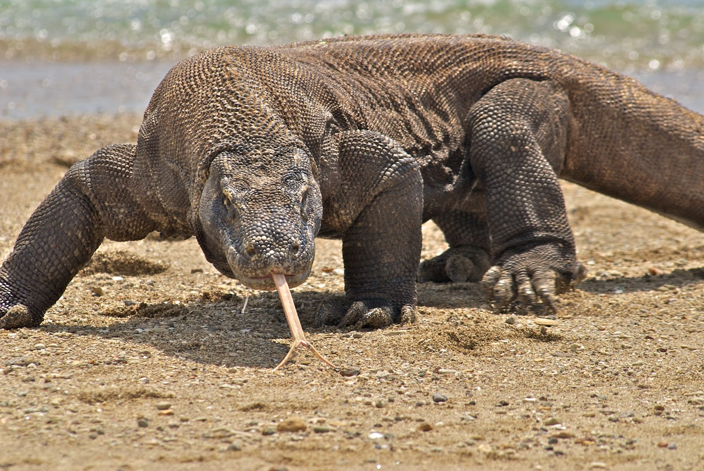
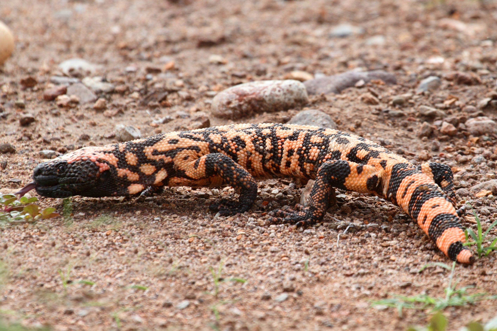
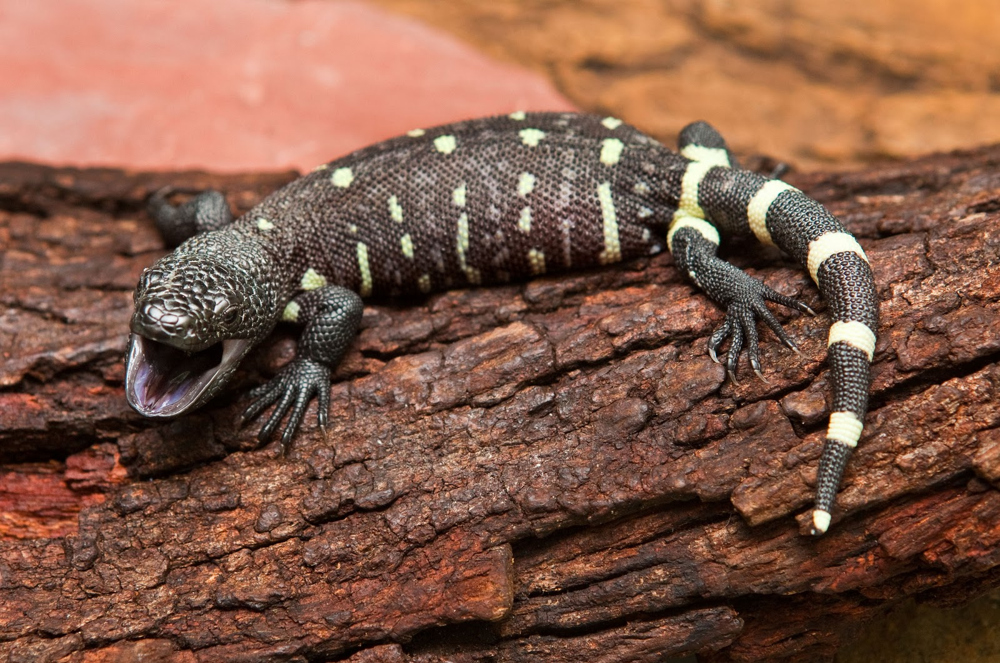

While having the most variety of species in the reptile category, it's hard to know everything about these creatures.
These reptiles are sorted into 16 families, many that are well known.
| Family name | Scientific name | # of species | Description |
|---|---|---|---|
| Agamids | Agamidae | 300 species | Very similar to iguanids, the difference between them is their teeth. They are known as Water Dragons, Bearded Dragons, and also Frilled Dragons. |
| Iguanids | Iguanidae | 650 species | Known as the common or giant green iguana. They are both desert-dwelling species as well as those from humid jungles. |
| Chameleons | Chameleonatidae | 85 species | They need really no introduction. They are also somewhat anti-social reptiles, more so than possibly any other family. |
| Anguids | Anguidae | 75 species | They have a strong tendency to be legless, including species like the North American Glass Lizard. |
| Xenosaurs | Xenosauridae | 7 species | They are also known as crocodile lizards. Little is known about them, either their natural history or their captive requirements. |
| Anniellidae | Anniellidae | 2 species | These legless lizards are nocturnal, live in sand or leaf-litter, and are typically considered in the Anguidae family. |
| Skinks | Scincidae | 1000 species | They vary in form so there's no specific appearence. A "typical skink" could be described as 6-12 inches long, with smooth shiny scales. |
| Lacertids | Lacertidae | 200 species | There is not much information dedicated to the Lacertid family, but with the increased captive breeding of these lizards this situation will hopefully change soon. |
| Teiids | Teiidae | 227 species | Within the family there's two halves, the smaller version and the bigger versions. The smaller half of the family typically have long bodies and tails. The larger half of the family resemble monitors. |
| Girdle-Tailed Lizards | Cordylidae | 50 species | Cordylids are almost always spiky-looking creatures, ranging from 4-24 inches long. These lizards are found around rocky areas and live in colonies. |
| Plated Lizards | Gerrhosauridae | 50 species | They are normally 12-30 inches and covered in flat, armoured scales. They are also found around rocky areas just like cordylids. |
| Xantusids | Xantusiidae | 16 species | A family of small, gecko-like lizards often referred as "night lizards". These lizards has been descibed as "nondescipt". |
| Dibamids | Dibamidae | 10 species | Collectively also known as "Blind Lizards", little is known about this family of limbless lizards who live in burrows. |
| Geckos | Gekkonidae | 830 species | Geckos are on the small side, the largest species is around 14 inches long. Virtually all of them lack the normal scales but have instead tubercles on their soft skin, and many lack eyelids. Geckos are also the most vocal of lizards, often communicating with barks, clicks or even a sort of chuckle. |
| Pygopods | Pygopodidae | 31 species | The "snake lizards", they are all limbless, although like many such lizards they retain the vestiges of their hind limbs. They lack movable eyelids and external ear openings. |
| Helodermatids | Helodermatidae | 2 species | They are the only two venomous lizards in the world, the Gila Monster and the Mexican Beaded lizard. |
| Varanids | Varanidae | 30 species | These monitors are renowned for being the giants of the lizard world, there are also a number of "dwarf" species. The monitors in this family are such as the Komodo Dragon. |
| Lanthanodontids | Lanthanodontidae | Only 1 species | The only species in this family, better known as the Earless Monitor. Very little is really know about this lizard. |
Lizards belong to the class Reptilia, resembling closely with snakes. There are some lizards, who are exactly like snakes and do not have legs, and hence called sheltopusiks.
Most lizards typically have movable eyelids unlike snakes; an exception to this are geckos who are unable to blink.
Most lizards communicate through colors they possess along with they can be idetified with their colors.
Lizard's hearing ability is very keen, due to the clear absence of the eardrums, unlike the mammals.
Komodo Dragons are one of the largest monitors and one of the deadliest to humans. They have a posionous bite and run 11-12.5 mph.
The gilamonster, while smaller has a very posionous bite.
The Mexican Beaded lizard is the second lizard that also has a posionous bite.
Their food habits depend on the lizards nature. While some are carnivorous, eating mainly birds, mammals and other reptiles. There's vegetarians who prefer leaves, vegetables, flowers, and fruits. Along with most will eat insects. It all depends on their habitat, location, and size.
Lizards reside on the ground, but some also prefer tree, water or even burrows. Depending on where they reside they have special features to help them.
| Location | Species # |
|---|---|
| North America | Over 150 species |
| South America | Over 200 species |
| Europe | 300 species |
| Asia | Over 40 species |
| Africa | Over 37 species |
| Australia | Over 617 species |
| Antarctica | zero |
| Oceans | two |
There's variations of the same species and even more that we are still discovering
- Most lizards absorb water from their food and some lizards go their entire life without drinking water
- A lizards tail isn't strong and can break off if grabbed by a predator as a escaping mechanism.
- Most lizards aren't dangerous, with the exception of the Gila monster, Mexican Beded lizard, and the Komodo dragon.
- Some species of lizard, such as the Chameleon or the Anole can change color at will.
- The Basilisk Lizard can run on water.
- Some lizards can survive on 3 meals a year.
- The Marine Galapagos Lizard is the only lizard that swims.
- The Anniellidae family is the only lizard that give live birth.
- Females of the Teiidae family can become pregnant without a male.